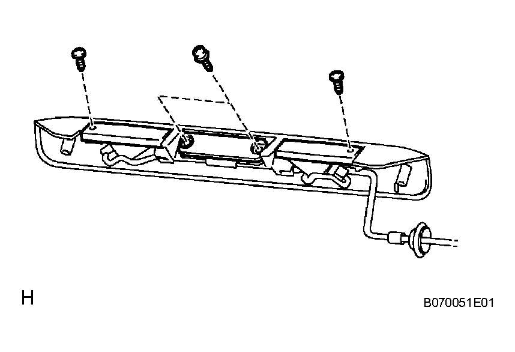
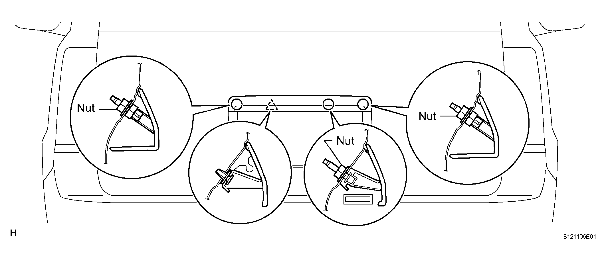

Home
>>
Scion
>>
2006
>>
xB Standard
>>
Repair and Diagnosis
>>
Accessories & Equipment
>>
Interior/Exterior Trim
>>
Exterior
>>
Back Door Outside Garnish
>>
Installation
Back Door Outside Garnish: Installation
INSTALL BACK DOOR OUTSIDE GARNISH
Install the light set rear with the 4 screws.
Fig 1: Installing Light Set Rear With Screws

Courtesy of © TOYOTA, LICENSE AGREEMENT TMS1002
Attach the clip and install the garnish with the 3 nuts.
Fig 2: Installing Garnish With Nuts

Courtesy of © TOYOTA, LICENSE AGREEMENT TMS1002
INSTALL BACK DOOR TRIM BOARD (See
REASSEMBLY
)